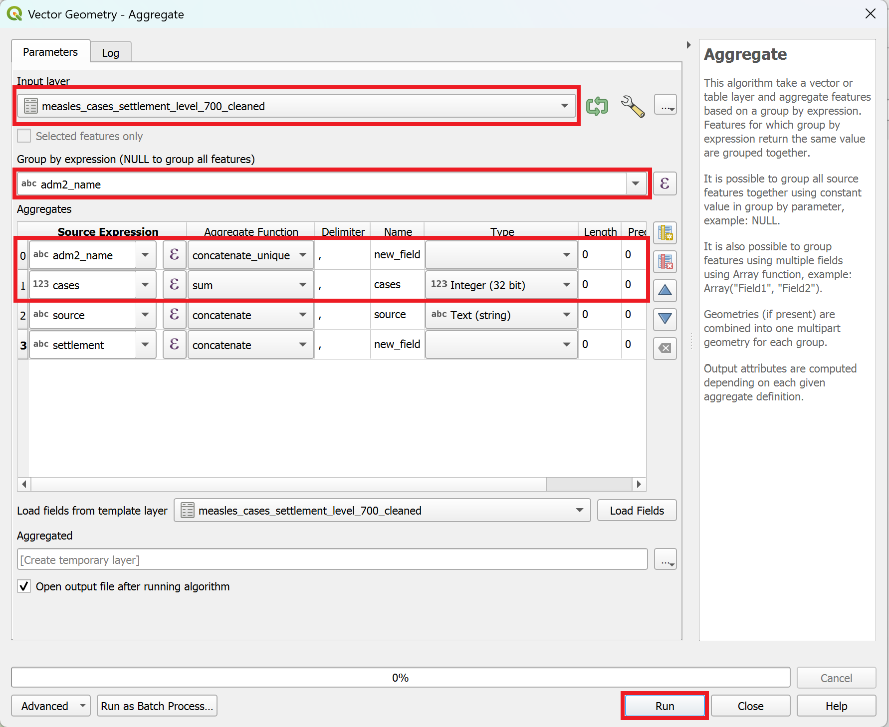
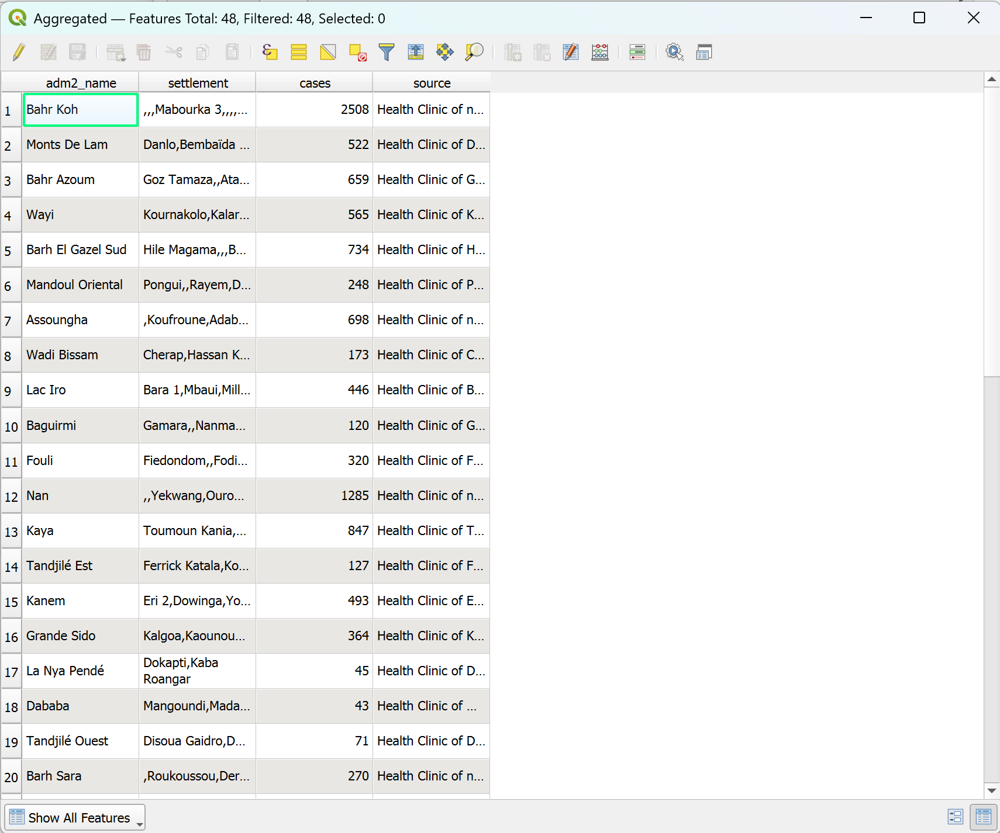

Exercise 2: Analysing Measles Case Data and Population Distribution#
Background#
The Epidemiology Department has shared a line-list of suspected measles cases reported by health districts. Your task in this exercise is to combine this surveillance data with population estimates from WorldPop to identify districts with high measles incidence rates. This will help the response coordination team prioritise vaccination deployments and plan logistics for outreach activities.
Available Data#
Note
Dataset name |
Description |
Source |
Download link / note |
|---|---|---|---|
|
QGIS project created in Exercise 1 |
Local project folder |
|
|
Chad administrative boundaries (level 2 – districts) |
OCHA |
|
|
2025 population estimate raster |
WorldPop |
|
|
Reported measles cases by district (line list) |
Ministry of Health (MoH) Epidemiology Dept. |
Provided for this exercise |
|
Digital Elevation Model (optional) |
NASA SRTM |
Optional (for terrain visualization) |
Tasks#
Task 1: Open the Project and Prepare the Workspace#
Open the QGIS project created in Exercise 1:
Project → Open… → chad_health_infrastructure.qgz.
Verify that the administrative boundaries and health facility layers load correctly.
If any layers show an error, use the “Re-link missing layers” dialog to correct their file paths.
Task 2: Calculate the Population per District#
In order to calculate the incidence rate per district, we first need to know the population in each district. In many humanitarian contexts, there may be no recent or reliable census data available due to conflict, displacement, or limited national statistical capacity. In such cases, we can use WorldPop population estimates to approximate the population per district. WorldPop produces high-resolution gridded population datasets by combining census data, satellite imagery, land cover information, and statistical modelling to predict population distribution. While these estimates are very useful for planning and epidemiological analysis, it is important to remember that they are modelled estimates, not exact counts, and may carry some uncertainty.
Add the WorldPop 2025 raster (
tcd_worldpop_2025.tif) via drag-and-drop or:Layer → Add Layer → Add Raster Layer….Take the time to investigate the new layer. Where is the population concentrated? What is the highest or median cell value? How is raster data different to vector data?
Tip
You can use the Identify Tool to click on the raster and see population estimates per pixel.
We will now calculate the total population for each district using the tool “Zonal Statistics”
In the Processing Toolbox, search for “Zonal Statistisc” and open the tool.
Set the parameters as follows:
Input layer:
tcd_admbnda_adm2_20250212_ABRaster layer:
tcd_worldpop_2025Raster band: 1
Ouput column prefix:
population_Statistics to calculate:
Sum
Click
Run.The Result will be a new layer called
Zonal Statistics. This is a temporary layer, indicated by the on the right of the layer name.Make the layer permanent by right-clicking on it →
Make permanent.Take a look at the new layer by opening it’s attribute table and looking at the new column.
Optional: Downloading additional worldpop data
WorldPop also offers estimations of population in age brackets. For our scenario, it is useful to know the population under 5 per district.
Can you find and download the WorlPop raster containing the population under 5?
Once you’ve done so, import it to your QGIS project and calculate the population under 5 per district.
Task 3: Import and Explore the Measles Cases List#
Import the measles cases dataset as a delimited text layer with no geometry.
In the top bar, navigate to
Layer→Add Layer→Add Delimited Text Layer.... A new window will open.To the right of file name, click on the
 three points and navigate to the file in the
three points and navigate to the file in the /data/input/-folder. ClickOpen.Under
Geometry DefinitionselectNo geometry (attribute only table).Check if the sample data displays correctly. Make sure the data type is correct (e.g., cases as integers, not as string).
Click
Add.
Note
As with other data formats, you can drag-and-drop csv-files onto your map canvas and it will be loaded into your project. However, this will lead to mistakes in the data format for each column as it assumes that every column contains text (string) data. You will be unable to perform mathematical or statistical operations with these columns.
Make sure to always load csv data via the data source manager and not via drag-and-drop
Explore the new data file by opening the attribute table.
Right-click on the
measles_cases_adm2-layer and open the attribute table.Take a look at the columns and at how the data is being stored.
How could we use this data in our map?
Task 4: Aggregate the measles case data with the district boundaries (adm2)#
We have received a .csv-file containing measle case report. In order to identify the hotspots, we want to aggregate the number of cases per district (adm2). However, the data does not include geographic coordinates. However, the dataset includes the names of the settlement where the case has been reported, as well as the district. With this information, we can aggregate the number of cases per district and, in a next step, join them with the adm2-layer.
Because multiple records exist per district and data, we’ll aggregate them:
In the processing toolbox, search for “Aggregate”
As input layer, select the measles case data we imported in the previous step.
Group by expression: adm2_name
In the Aggregates table, remove all the columns (under source expression) except for
adm2_name,cases,settlement, andsource.To delete a row: select it by clicking on the row number on the left (it will be highlighted blue), and click on .
Set the Aggregate Function to
concatenate_uniquefor “adm2_name”.Set the Aggregate Function to
sumfor “cases”.Click
Run. A new layer will be added to the layers panel on the left.

Set the parameters for the tool as in the picture. Make sure that the field adm2_name is set to
concatenate_uniqueand the cases field tosum.#
{kind=link}
Let’s take a look at the resulting data table. The resulting table should look like this:
{kind=link}

The aggregated data table.#
Let’s make the new layer permanent by right-clicking on it →
Make permament. Name the file “Aggregated_measles_cases_adm2”.
Great, we now have an aggregated list of cases that we can join with the adm2 polygon layer.
Task 5: Joining the aggregated dataset with our adm2 layer#
We can join the aggregated table with our adm2-layer including the population data:
In the processing toolbox, open the “Join Attributes by Field value”-tool
Input layer:
adm2_popTable field:
ADM2_FRInput layer 2:
Aggregated_measles_cases_adm2Table field 2:
adm2_nameFields to copy
sumJoined field prefix:
measles_cases_Click
Run.
The result will be a new layer called
Joined layer. Let’s open the attribute table and look at the data.
If everything is correct, let’s make the layer permanent.
Task 6: Calculating the incidence rate#
Our district layer now includes both the population and measle cases. With this information, we can calculate the incidence rate.
Open the field calculator in the attribute table. The field calculator let’s you enter expression to calculate new columns.
Right-click on the layer and open the attribute table (or select the layer and press F6)
In the tool bar of the attribute table, open the .
A new window will open. This is the expression builder.
In the expression builder, we can build and test expressions.
In the middle section, we can open the “Fields and values” header to show the columns of the dataset. Uncollapse it and Double-Click on “pop_sum”. This will add the colun to the expression window on the left.
In the expression window
Enter the following expression:
(CASES / POP ) * 10000
Great, we have calculated the incidence rate in our polygon layer. Now, we can create a map displaying the information we gained